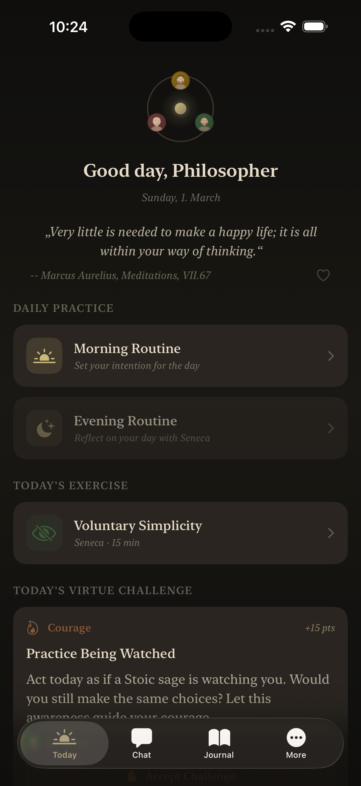

Philosophical Conversations
Speak directly with Marcus Aurelius, Seneca, or Epictetus. Receive authentic wisdom in their unique voice, drawing from their original works.
Marcus · Seneca · Epictetus
Engage in profound conversations with Marcus Aurelius, Seneca, and Epictetus. Build daily Stoic practices. Transform your thinking.

Morning Routine
7-Day Streak
Stoic Journal
"Very little is needed to make a happy life; it is all within your way of thinking."
What's inside
Everything you need to build a life guided by ancient wisdom
Speak directly with Marcus Aurelius, Seneca, or Epictetus. Receive authentic wisdom in their unique voice, drawing from their original works.
Start and end each day with guided Stoic practices. Reflect on Marcus's intentions in the morning, follow Seneca's evening review at night.
36 curated prompts across 8 Stoic themes. Write about the dichotomy of control, Amor Fati, and more. Track your mood and growth over time.
16 guided exercises including Premeditatio Malorum, View from Above, and Voluntary Discomfort. Daily virtue challenges across Wisdom, Courage, Justice, and Temperance.
Track your journey from Prokoptones to Sophos. Build daily streaks, earn virtue points, and see your growth through mood history and activity calendar.
A home screen widget that shows your remaining weeks — a powerful reminder to live fully. Customize your life expectancy and see your Stoic stats at a glance.
Your guides
Each philosopher brings a unique voice, perspective, and wisdom to guide your journey
121 – 180 AD
Emperor · Philosopher
The philosopher-king speaks on duty, leadership, and inner peace. His Meditations, written as personal reflections, offer timeless guidance on living virtuously.
4 BC – 65 AD
Philosopher · Statesman
Eloquent and direct, Seneca writes like a wise friend. His letters to Lucilius and essays on time, death, and emotions remain profoundly relevant today.
50 – 135 AD
Former Slave · Teacher
Born into slavery, Epictetus became one of antiquity's greatest teachers. His Enchiridion is a practical manual for living with courage and inner freedom.
The experience
The Stoic Circle is crafted for daily use — warm, elegant, and distraction-free. Every element is designed to bring you closer to Stoic philosophy, not further from it.
Getting started
Download the app for free. Complete the guided onboarding to meet your three Stoic mentors and set your daily intention.
Start each day with the morning routine, complete exercises and virtue challenges, and reflect in your journal each evening.
Track your progress on the Stoic Path from Prokoptones to Sophos. Watch your virtue scores grow and your thinking transform.
Free to download. Wisdom available immediately.
Free with optional premium subscription · iOS 17+ · iPhone